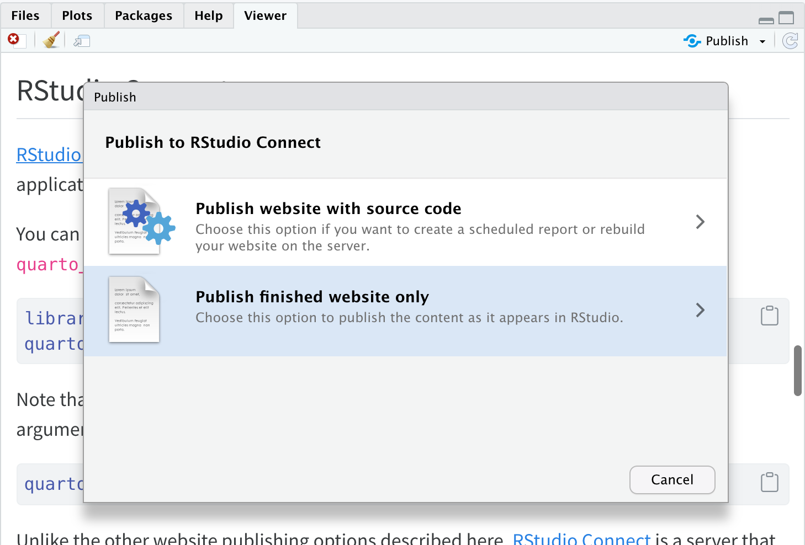
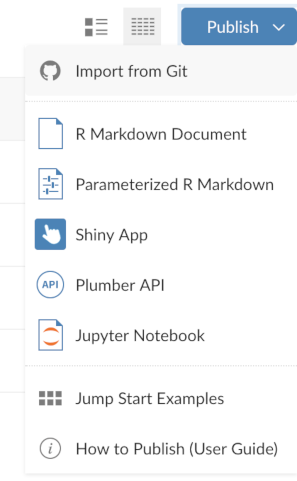
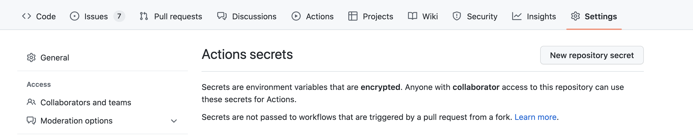
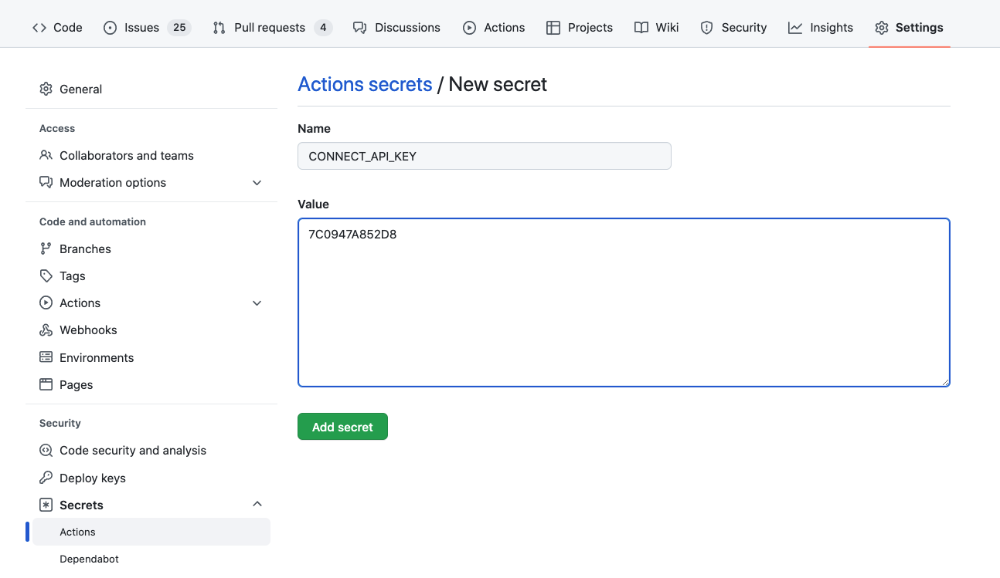

RStudio Connect
Overview
RStudio Connect is a publishing platform for secure sharing of data products within an organization. Use RStudio Connect when you want to publish content within an organization rather than on the public internet.
There are several ways to publish Quarto content to RStudio Connect:
Use the
quarto publishcommand to publish static content rendered on your local machine.Use the rsconnect-python Python package or quarto R package to publish code for rendering on an RStudio Connect server (e.g. for a scheduled report).
Use Connect’s support for Git backed content to automatically re-publish content when code is checked in to a Git repository.
Use a Continuous Integration (CI) service like Jenkins, Airflow, or GitHub Actions, to render and publish to Connect.
Each of these options is covered in detail below. If you are just getting started, we strongly recommend using the first approach (quarto publish). Then, as your needs evolve, you can consider other more sophisticated options.
Publish Command
The quarto publish command is the easiest way to publish locally rendered content. From the directory where your project is located, execute the quarto publish command for Connect:
quarto publish connectIf you haven’t previously published to Connect you’ll be prompted to enter your server’s URL:
$ quarto publish connect
? Server URL: › You’ll then need to provide a Connect API Key:
$ quarto publish connect
? Server URL: › https://connect.example.com/
? API Key: › After authenticating, your content will be rendered and published, and then a browser will open to view its admin page on Connect.
A record of your previous publishes will be stored in a _publish.yml file within the project or document directory. This file stores the service, id, and URL of the published content. For example:
- source: project
connect:
- id: "3bb5f59f-524a-45a5-9508-77e29a1e8bf0"
url: "https://connect.example.com/content/3bb5f59f-524a-45a5-9508-77e29a1e8bf0/"Account information is not stored in this file, so it is suitable for checking in to version control and being shared by multiple publishers.
You can customize this behavior of quarto publish by providing the following command line options:
| Option | Behavior |
|---|---|
--no-prompt |
Do not prompt to confirm publish actions. |
--no-browser |
Do not open a browser after publish. |
--no-render |
Do not re-render prior to publish |
To publish a document rather than a website or book, provide the path to the document:
quarto publish connect document.qmdPublishing with Code
In the preceding example, we rendered content locally and then published it to Connect. In some cases, however, you may want to publish your source code to Connect and then have it rendered on the server (for example, to create a scheduled report that is updated with new data automatically).
The tools for publishing code differ depending on whether you are using the Knitr (R) or Jupyter (Python) engine, so we’ll cover them separately below. Note that Quarto must be installed on the Connect server before you attempt to publish with code (this is typically done by an administrator, see the Quarto Installation documentation for additional details).
Knitr (R)
The quarto R package includes a set of publishing functions that you can use for publishing Quarto projects with R code to RStudio Connect. For example, here we publish a document and a website:
library(quarto)
quarto_publish_doc(
"document.qmd",
server = "rsc.example.com",
account = "njones",
render = "server"
)
quarto_publish_site(
server = "rsc.example.com",
account = "njones",
render = "server"
)The render = "server" argument is what specifies that you want code rather than just content published.
Note that once you’ve published for the first time you can update without providing the explicit arguments:
quarto_publish_site()See the article on Quarto Publishing from R for additional details on using these functions.
RStudio IDE
If you are using the RStudio IDE, there is also support for push-button publishing to RStudio Connect. Use the publish button  from the source editor or viewer pane to publish a document or a website:
from the source editor or viewer pane to publish a document or a website:

See the Connect documentation on Publishing from the RStudio IDE for additional details.
Jupyter (Python)
The rsconnect-python Python package provides a command line interface (CLI) that you can use to publish Quarto documents and websites that use Jupyter to RStudio Connect. To use the CLI:
First, install the rsconnect-python package and configure an RStudio Connect server for publishing: https://docs.rstudio.com/connect/user/connecting-cli/
Then, use the
rsconnect deploy quartocommand from your project directory:rsconnect deploy quarto
See the complete documentation on Publishing Quarto Content for additional details on using the CLI for publishing to Connect.
Notebook Plugin
If you are using the classic Jupyter Notebook you can install the rsconnect-jupyter notebook plugin to enable push button publishing of Jupyter notebooks:
First, follow the directions in the rsconnect-jupyter User Guide to install the plugin.
Then, click the publish button
 from a notebook you wish to publish. You’ll be prompted to configure a Connect server and then be presented with a publishing dialog:
from a notebook you wish to publish. You’ll be prompted to configure a Connect server and then be presented with a publishing dialog:
See the article on Publishing Jupyter Notebooks for complete documentation on using the plugin.
Publishing from Git
Content may be deployed to RStudio Connect directly from a remote Git repository. Content will automatically fetch from the associated remote Git repository and re-deploy. This allows for integration with Git-centric workflows and continuous deployment automation.
In order to deploy Git-backed content to RStudio Connect you’ll follow a two step process:
Create and commit a manifest file (this includes information on the R or Python dependencies required to render your content)
Link RStudio Connect to the Git repository
Note that Quarto must be installed on the Connect server before you attempt to publish from Git (this is typically done by an administrator, see the Quarto Installation documentation for additional details).
Creating a Manifest
Consult the Connect documentation on Git Backed Content for complete details on creating manifests and checking them in to your repository. To give you a general idea of how this works, here is some sample code that creates a manifest for Knitr and Jupyter projects:
# write a manifest for a Knitr project
install.packages("rsconnect") # if required
rsconnect::writeManifest()# write a manifest for a Jupyter notebook
pip install rsconnect-python # if required
rsconnect write-manifest notebook MyNotebook.ipynbSee the documentation on Git Backed Content for complete details on creating manifests.
Connecting a Repository
Connect users must have at least the publisher role in order to create new content from a Git repository.
On the Content page, there is a button near the top labeled Publish. Clicking on this button will expand a menu which contains an item called “Import from Git”, which may be clicked to launch a new content wizard.

You’ll be prompted to provide your repository URL, branch to publish from, and target directory to publish from (e.g., the one containing your manifest.json).
See the documentation on Git Backed Content for complete details on connecting Git repositories to Connect.
Continuous Integration
You can also deploy Quarto content using a Continuous Integration (CI) service like Jenkins, Airflow, or GitHub Actions. In most cases, this will entail scripting the quarto publish command, however in the case of GitHub Actions, you can take advantage of the standard Quarto publish action.
When publishing to Connect from a CI service you’ll need to consider whether you want to execute your Python or R code directly on the CI server or whether you want to take advantage of previously frozen execution results. We’ll explore this possibility first and then proceed to the specifics of how to publish from CI.
Freezing Computations
Depending on how complicated your run-time requirements (packages, database credentials, etc.) are, you might find it more convenient to restrict execution of Python and R code to local contexts that have the required software and credentials.
To make sure that R, Python, and Julia code is only executed locally, configure your project to use Quarto’s freeze feature by adding this to your _quarto.yml:
_quarto.yml
execute:
freeze: autoNow, fully re-render your site:
quarto renderIf you have executable code in your project you’ll notice that a _freeze directory has been created at the top level of your project. This directory stores the results of computations and should be checked in to version control. Whenever you change a .qmd file with executable code, it will automatically be re-run during your next render and the updated computations will be stored in _freeze.
If you’d rather have CI publishing execute all Python and R code contained in your project, you’ll need to ensure that the requisite version of these tools (and any required packages) are installed on the CI server. How to do this is outside the scope of this article—to learn more about saving and restoring dependencies, see the article on Virtual Environments.
Publish Command
You can publish Quarto content to Connect using any CI service by scripting the quarto publish command. To do this, you’ll need to make sure that your Connect server address and credentials are available as environment variables on the CI server.
| Variable | Description |
|---|---|
CONNECT_SERVER |
Address of RStudio Connect server (e.g., https://connect.example.com). |
CONNECT_API_KEY |
RStudio Connect API Key |
You will furthermore need to specify the ID of the target content to update. This will most frequently be drawn from the _publish.yml file that is saved into your project directory during publishing. For example:
_publish.yml
- source: project
connect:
- id: 4f2ffc46-24b0-4cc7-a854-c5eb671e0dd7
url: 'https://connect.example.com/content/4f2ffc46-24b0-4cc7-a854-c5eb671e0dd7/'Assuming that you have a _publish.yml like the above, you can publish to Connect from CI with the following commands:
export CONNECT_SERVER=https://connect.example.com/
export CONNECT_API_KEY=7C0947A852D8
quarto publish connectAlternatively, if you don’t have a _publish.yml file, you can specify the ID on the command line as follows:
quarto publish connect --id 4f2ffc46-24b0-4cc7-a854-c5eb671e0dd7GitHub Actions
If your CI service is GitHub Actions then you can take advantage of Quarto’s standard publish action to automate deploying to Connect.
Server Credentials
Before creating the publish action, you need to ensure that your repository has the credentials required for publishing to Connect. You can do this as follows:
If you don’t already have one, create an RStudio Connect API Key from the requisite Connect server and then copy it to the clipboard.
Add the Connect API Key to your repository’s action Secrets (accessible within repository Settings). You will see a New repository secret button at the top right:

Click the button and add the API Key from step 1 as a secret named
CONNECT_API_KEY:
Publish Action
To setup your publish action, create a .github/workflows/publish.yml file in your repository. If you are Freezing Computations (i.e. not running Python or R code within your action), then the file would look something like this:
.github/workflows/publish.yml
on:
push:
branches: main
name: Quarto Publish
jobs:
build-deploy:
runs-on: ubuntu-latest
steps:
- name: Check out repository
uses: actions/checkout@v2
- name: Set up Quarto
uses: quarto-dev/quarto-actions/setup@v2
- name: Render and Publish
uses: quarto-dev/quarto-actions/publish@v2
with:
target: connect
CONNECT_SERVER: https://connect.example.com
CONNECT_API_KEY: ${{ secrets.CONNECT_API_KEY }}Once you’ve pushed your updated repository (including the publish action and _freeze directory) to GitHub, your action will run with this and subsequent commits, automatically rendering and publishing to Connect.
Executing Code
If you prefer, you can also configure GitHub Actions to execute Python or R code as part of rendering. While this might reflexively seem like the best approach, consider the following requirements imposed when you execute code within a CI service like GitHub Actions:
You need to reconstitute all of the dependencies (R, Python, or Julia plus the correct versions of required packages) in the CI environment.
If your code requires any special permissions (e.g. database or network access) those permissions also need to be present on the CI server.
Your project may contain documents that can no longer be easily executed (e.g. blog posts from several years ago that use older versions of packages). These documents may need to have
freezeindividually enabled for them to prevent execution on CI.
Prerequisites
The best way to ensure that your code can be executed within a GitHub Action is to use a virtual environment like venv or renv with your project (below we’ll provide example actions for each). If you aren’t familiar with using these tools check out the article on using Virtual Environments with Quarto to learn more.
Once you’ve decided to execute code within your GitHub Action you can remove the freeze: auto described above from your _quarto.yml configuration. Note that if you want to use freeze selectively for some documents or directories that is still possible (for a directory, create a _metadata.yml file in the directory and specify your freeze configuration there—this is what Quarto does by default for the posts folder of blog projects).
Example: Jupyter with venv
Here is a complete example of a GitHub Action that installs Python, Jupyter, and package dependencies from requirements.txt, then executes code and renders output to Connect:
.github/workflows/publish.yml
on:
push:
branches: main
name: Quarto Publish
jobs:
build-deploy:
runs-on: ubuntu-latest
steps:
- name: Check out repository
uses: actions/checkout@v2
- name: Set up Quarto
uses: quarto-dev/quarto-actions/setup@v2
- name: Install Python and Dependencies
uses: actions/setup-python@v4
with:
python-version: '3.10'
cache: 'pip'
- run: pip install jupyter
- run: pip install -r requirements.txt
- name: Render and Publish
uses: quarto-dev/quarto-actions/publish@v2
with:
target: connect
CONNECT_SERVER: https://connect.example.com
CONNECT_API_KEY: ${{ secrets.CONNECT_API_KEY }}Example: Knitr with renv
Here is a complete example of a GitHub Action that installs R and package dependencies from renv.lock, then executes code and renders output to Connect:
.github/workflows/publish.yml
on:
push:
branches: main
name: Quarto Publish
jobs:
build-deploy:
runs-on: ubuntu-latest
steps:
- name: Check out repository
uses: actions/checkout@v2
- name: Set up Quarto
uses: quarto-dev/quarto-actions/setup@v2
- name: Install R
uses: r-lib/actions/setup-r@v2
with:
r-version: '4.2.0'
- name: Install R Dependencies
uses: r-lib/actions/setup-renv@v2
with:
cache-version: 1
- name: Render and Publish
uses: quarto-dev/quarto-actions/publish@v2
with:
target: connect
CONNECT_SERVER: https://connect.example.com
CONNECT_API_KEY: ${{ secrets.CONNECT_API_KEY }}Additional Options
It’s possible to have a Quarto project in a larger GitHub repository, where the Quarto project does not reside at the top-level directory. In this case, add a path input to the invocation of the publish action. For example:
- name: Render and Publish
uses: quarto-dev/quarto-actions/publish@v2
with:
target: connect
path: subdirectory-to-use
CONNECT_SERVER: https://connect.example.com
CONNECT_API_KEY: ${{ secrets.CONNECT_API_KEY }}By default, quarto publish will re-render your project before publishing it. However, if you store the rendered output in version control, you don’t need the GitHub action to re-render the project. In that case, add the option render: false to the publish action:
- name: Render and Publish
uses: quarto-dev/quarto-actions/publish@v2
with:
target: connect
render: false
CONNECT_SERVER: https://connect.example.com
CONNECT_API_KEY: ${{ secrets.CONNECT_API_KEY }}